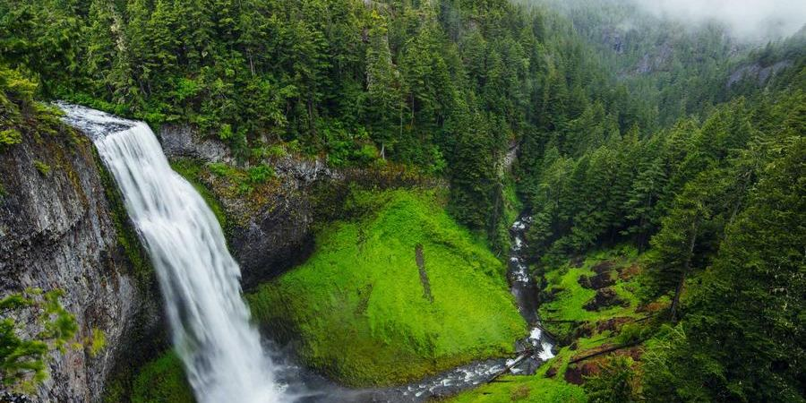

Six days of rain, one clear morning, and a ferry timetable that turned out to be a suggestion. Everything below was shot within walking distance of the same red cabin.

Field Notes is a running journal of places that took longer to reach than expected. Everything here is shot on a 35mm body I have dropped twice and a phone I keep losing.